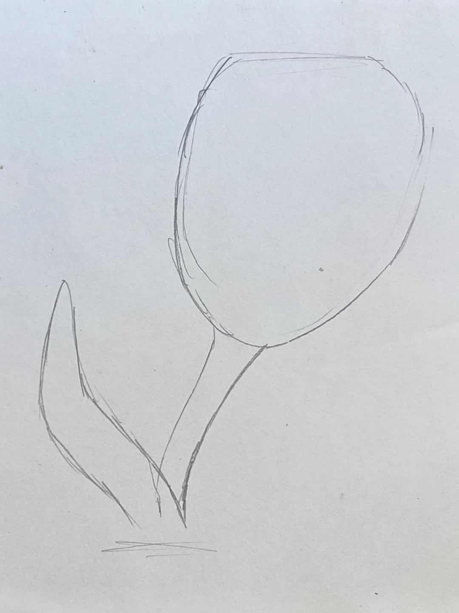

How to draw Tulip

1. First daraw a preliminary sketch.
2. Start drawing details.
3. Out line with dark pink and light green.
4. Paint the petals and rose petals.
5. Finally, draw the flower path with yellow green, grass green and dark green.